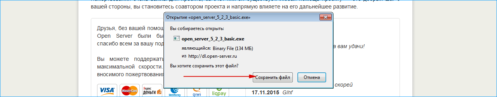

ГЛАВНАЯ
Создание БД (Базы данных)
Главная → Урок 1
Что такое OpenServer?
OpenServer – набор программ, платформа для локальной работы с сайтами. Включает в себя:- Apache;
- Nginx;
- MySQL;
- MariaDB;
- MongoDB;
- PostgreSQL;
- PHP;
- PHPMyAdmin.
Где скачать Open Server?
Скачивать лучше с официального сайта — http://open-server.ru/
На странице «Скачать» нужно выбрать необходимую редакцию (чтобы проверить резервную копию или установить CMS подойдет «Базовая»), ввести капчу и нажать на кнопку скачивания.
Откроется страница с отзывами, и ссылкой на программу. Нажимаем «Скачать», сохраняем файл. Скачивание займет до 60 минут.
Это еще одна причина выбрать минимальную версию – нет смысла увеличивать в 3 раза объем программы, если использоваться будет только связка Apache+PHP+MySQL.
Несмотря на длительную загрузку с программы с официального сайта, мы не рекомендуем скачивать ее с различных файлообменников, торрентов. Часто программы «переупаковывают» добавляя в установщик лишние компоненты.
Так что лучше час-два подождать, чем потратить эти же 2 часа на чистку операционной системы от «внезапно» установившихся лишних программ.
Что такое OpenServer?
Переходим в папку со скачанным установщиком, запускаем файл:Выбираем папку, в которую будет распакована программа, нажимаем «ОК»:
Ждем, пока распакуется архив:
 Теперь программу можно запускать.
Теперь программу можно запускать.
Настройка и запуск OpenServer
После завершения процесса установки, можно перейти в заданную папку и запустить программу. В зависимости от разрядности операционной системы, выберите либо «Open Server x64.exe», либо «Open Server x86.exe».После запуска выберите желаемый язык:
В трее появится иконка OpenServer c уведомлением об успешном запуске:
Если программа запускается впервые, Вам могут предложить установить патчи для Microsoft Visual C++. Для базовой работы с программой это можно не делать. В случае, если Вы не уверены, установлены ли у Вас эти компоненты – установите их.